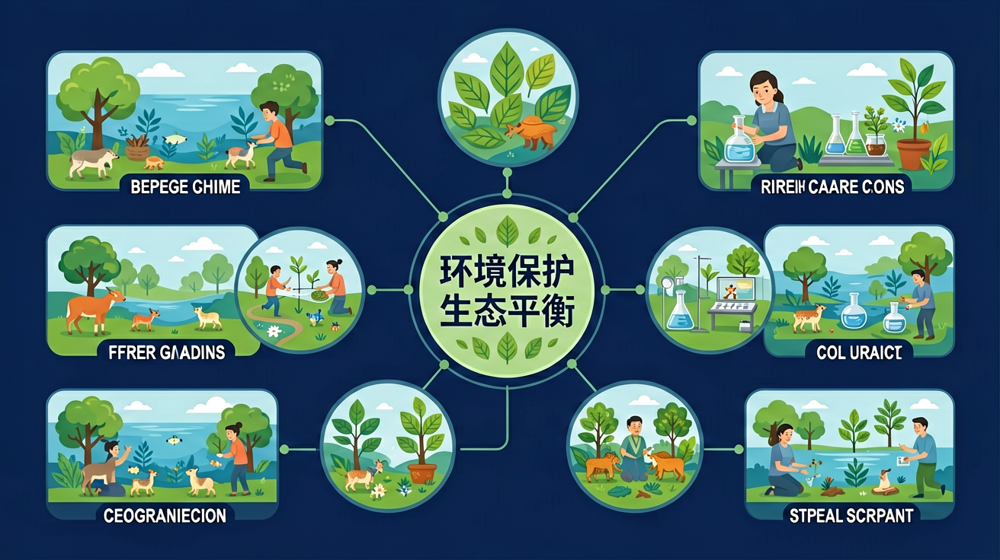
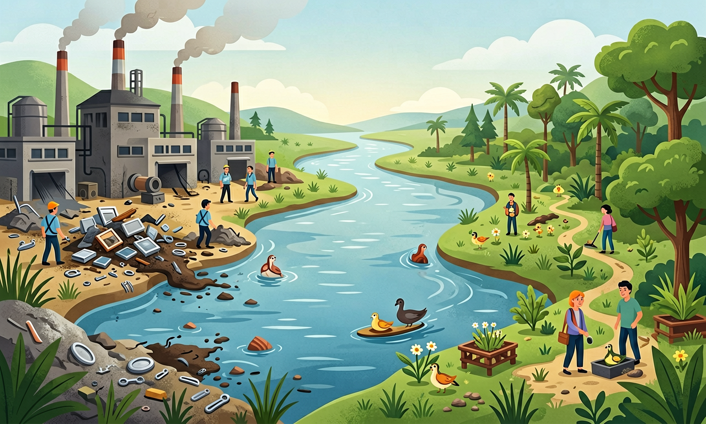
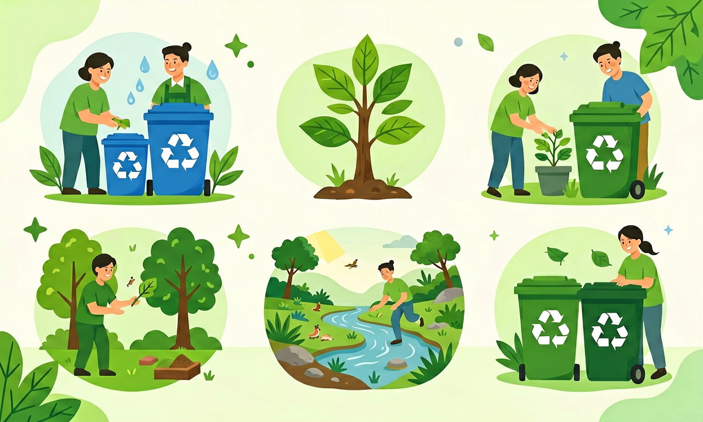

垃圾分类、节约用水、保护湿地……我们每个人都能为地球减负。认识人类活动与环境的关系，践行绿色生活。

选择或输入后，这节课会围绕你的问题展开。
把旧作业本反面接着用来草稿，主要体现了哪种环保做法？
先选一个，错了正好暴露你的前概念，我们一起纠正。
人类从环境中获取空气、水、土壤、矿产、生物等资源来维持生活。过度开采、乱排污水废气、随意丢弃垃圾，会让土壤板结、河流变脏、动物失去家园——生态平衡被打破。
生态平衡指生物与非生物环境之间相对稳定、相互依存的状态。一种物种消失或某种污染超标，可能通过食物链影响整个生态系统。

节约资源：随手关灯、节水、双面用纸。减少污染：垃圾分类、不用一次性塑料制品、不随地乱扔电池。保护生态：不随意采摘、不伤害野生动物、参与植树护绿。
可持续发展要求既满足当代需要，又不损害后代利益——从今天的小行动开始。

把卡片拖到节约资源 / 减少污染 / 保护生态三类中。
拖完 6 项后自动判分。
解释题：你们班想开展「一周绿色校园」活动，请提出两条具体做法，并说明每条如何保护环境。
提示：好的方案要具体（谁、做什么、怎么做），并点明对资源/污染/生态哪一方面有益。
拓展题：如果附近河流出现大量死鱼，你认为可能有哪些人为原因？
关于环境保护，哪种说法最科学？
选一个并查看反馈。
迁移任务：记录家里一周用水、用电、产生垃圾的情况，提出一条你能坚持的环保改进。